连接服务器
使用xshell工具在windows系统上连接Linux云服务器
- 新建连接
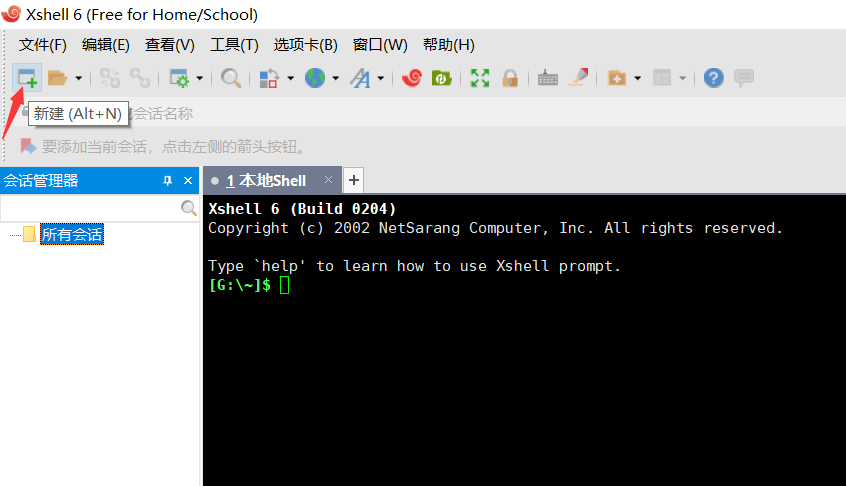
- 建立连接
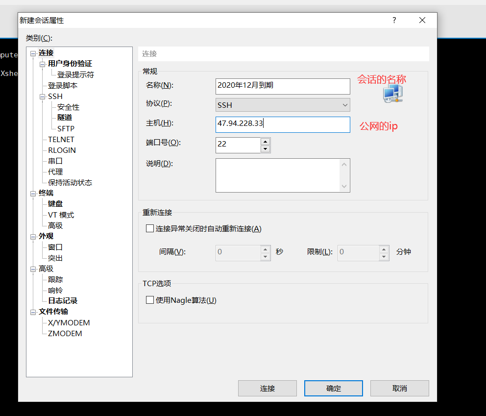
- 然后点击会话，输入用户名密码即可连接成功。
上传文件
使用xftp工具将本地的文件上传到云服务器
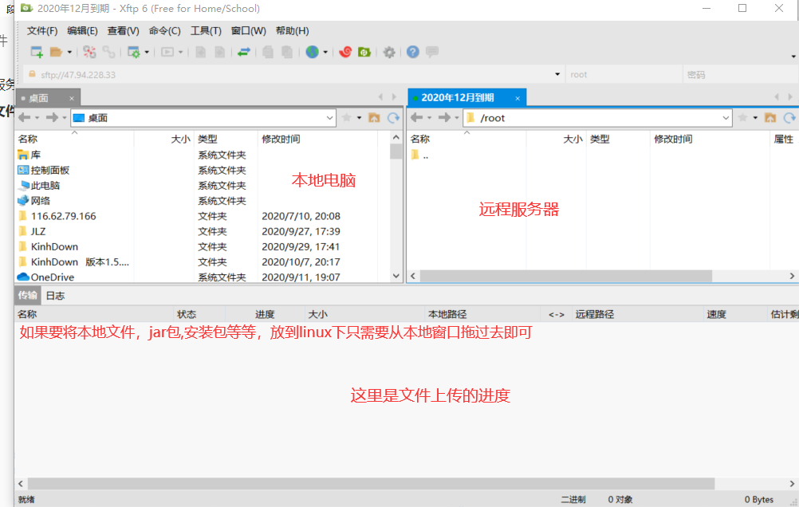
走进Linux
开机登录
开机会启动许多程序，它们在Windows叫做服务，在Linux中叫做守护进程
开机成功后，会显示一个文本登录界面，这就是我们经常看到的登录界面。
在Linux中最高权限账户为root，可以操作一切！
关机
Linux中没有错误就代表操作成功
关机指令为：shutdown
sync
shutdown
shutdown –h 10
shutdown –h now
shutdown –h 20:25
shutdown –h +10
shutdown –r now
shutdown –r +10
reboot
halt
注意：不管是重启系统还是关闭系统，首先要运行sync命令，把内存中的数据写到磁盘中
系统目录结构
- 一切皆文件
- 根目录 /， 所有的文件都挂载在这个节点下
登录系统后，在当前命令窗口下输入命令：
ls /
就会看到如下图所示：可以查看所有的文件目录
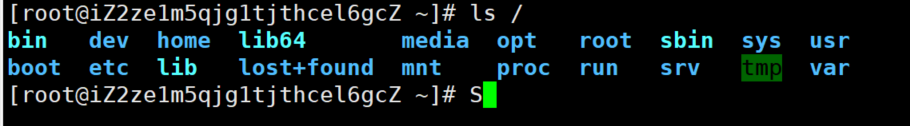
树状目录结构：（Linux的一切资源都挂载在这个 / 根节点下）

以下是对这些目录的解释：
- /bin：bin是Binary的缩写, 这个目录存放着最经常使用的命令。
- /boot： 这里存放的是启动Linux时使用的一些核心文件，包括一些连接文件以及镜像文件。不要动
- /dev ： dev是Device(设备)的缩写, 存放的是Linux的外部设备，在Linux中访问设备的方式和访问文件的方式是相同的。
- ==/etc： 这个目录用来存放所有的系统管理所需要的配置文件和子目录==。
- ==/home：用户的主目录，在Linux中，每个用户都有一个自己的目录，一般该目录名是以用户的账号命名的。==
- /lib：这个目录里存放着系统最基本的动态连接共享库，其作用类似于Windows里的DLL文件。不要动
- /lost+found：这个目录一般情况下是空的，当系统非法关机后，这里就存放了一些文件。存放突然关机的一些文件
- /media：linux系统会自动识别一些设备，例如U盘、光驱等等，当识别后，linux会把识别的设备挂载到这个目录下。
- /mnt：系统提供该目录是为了让用户临时挂载别的文件系统的，我们可以将光驱挂载在/mnt/上，然后进入该目录就可以查看光驱里的内容了。会把一些本地文件挂载在这个目录下
- ==/opt：这是给主机额外安装软件所摆放的目录。比如你安装一个ORACLE数据库则就可以放到这个目录下。默认是空的。==
- /proc：这个目录是一个虚拟的目录，它是系统内存的映射，我们可以通过直接访问这个目录来获取系统信息。不用管
- ==/root：该目录为系统管理员，也称作超级权限者的用户主目录。==
- /sbin：s就是Super User的意思，这里存放的是系统管理员使用的系统管理程序。
- /srv：该目录存放一些服务启动之后需要提取的数据。
- /sys：这是linux2.6内核的一个很大的变化。该目录下安装了2.6内核中新出现的一个文件系统 sysfs 。
- ==/tmp：这个目录是用来存放一些临时文件的。用来存放一些临时文件的。用完即丢的文件，可以放在这个目录下，比如说安装包==
- ==/usr：这是一个非常重要的目录，用户的很多应用程序和文件都放在这个目录下，类似于windows下的program files目录。==
- /usr/bin： 系统用户使用的应用程序。
- /usr/sbin： 超级用户使用的比较高级的管理程序和系统守护程序。
- /usr/src： 内核源代码默认的放置目录。
- ==/var：这个目录中存放着在不断扩充着的东西，我们习惯将那些经常被修改的目录放在这个目录下。包括各种日志文件。==
- /run：是一个临时文件系统，存储系统启动以来的信息。当系统重启时，这个目录下的文件应该被删掉或清除。
- ==www：存放服务器网站相关的资源，环境，网站的项目==
常用的基本命令
目录管理
绝对路径和相对路径
我们知道Linux的目录结构为树状结构，最顶级的目录为根目录 /。
其他目录通过挂载可以将它们添加到树中，通过解除挂载可以移除它们。
在开始本教程前我们需要先知道什么是绝对路径与相对路径。
绝对路径：
路径的写法，由根目录 / 写起，例如：/usr/share/doc 这个目录。
相对路径：
路径的写法，不是由 / 写起，例如由 /usr/share/doc 要到 /usr/share/man 底下时，可以写成：cd ../man 这就是相对路径的写法啦！
处理目录的常用命令
接下来我们就来看几个常见的处理目录的命令吧：
- ls: 列出目录
- cd：切换目录
- pwd：显示目前的目录
- mkdir：创建一个新的目录
- rmdir：删除一个空的目录
- cp: 复制文件或目录
- rm: 移除文件或目录
- mv: 移动文件与目录，或修改文件与目录的名称
你可以使用 man [命令] 来查看各个命令的使用文档，如 ：man cp。
ls （列出目录）
在Linux系统当中， ls 命令可能是最常被运行的。
语法：
[root@www ~]# ls [-aAdfFhilnrRSt] 目录名称
选项与参数：
- -a参数 ：all，查看全部的文件，连同隐藏文件( 开头为 . 的文件) 一起列出来(常用)
- -l ：列出所有的文件，包含文件的属性与权限等等数据，没有隐藏文件；(常用)
所有的Linux命令都可以组合使用
将目录下的所有文件列出来(含属性与隐藏档)
[root@www ~]# ls -al ~
cd （切换目录）
cd是Change Directory的缩写，这是用来变换工作目录的命令。
语法：
cd 目录名[相对路径或绝对路径]
测试：
[root@kuangshen /]
[root@kuangshen home]
[root@kuangshen home]
[root@kuangshen kuangstudy]
[root@kuangshen kuangstudy]
[root@kuangshen kuangstudy]
pwd ( 显示目前所在的目录 )
pwd 是 Print Working Directory 的缩写，也就是显示目前所在目录的命令。
[root@kuangshen kuangstudy]#pwd [-P]
选项与参数：**-P** ：显示出确实的路径，而非使用连接(link) 路径。
测试：
[root@kuangshen ~]
/root
[root@kuangshen /]
[root@kuangshen bin]
/usr/bin
mkdir （创建新目录）
如果想要创建新的目录的话，那么就使用mkdir (make directory)吧。
mkdir [-mp] 目录名称
选项与参数：
- -m ：配置文件的权限喔！直接配置，不需要看默认权限 (umask) 的脸色～
- -p ：帮助你直接将所需要的目录(包含上一级目录)递归创建起来！即直接创建
test1/test2/test3三层文件夹
测试：
[root@kuangshen /]
[root@kuangshen home]
[root@kuangshen home]
mkdir: cannot create directory ‘test1/test2/test3/test4’:
No such file or directory
[root@kuangshen home]
[root@kuangshen home]
[root@kuangshen home]
drwxr-xr-x 2 root root 4096 Mar 12 21:55 test
drwxr-xr-x 3 root root 4096 Mar 12 21:56 test1
drwx--x--x 2 root root 4096 Mar 12 21:58 test2
rmdir ( 删除空的目录 )
语法：
rmdir [-p] 目录名称
选项与参数：**-p ：**连同上一级『空的』目录也一起删除
测试：
[root@kuangshen home]
drwxr-xr-x 2 root root 4096 Mar 12 21:55 test
drwxr-xr-x 3 root root 4096 Mar 12 21:56 test1
drwx--x--x 2 root root 4096 Mar 12 21:58 test2
[root@kuangshen home]
[root@kuangshen home]
rmdir: failed to remove ‘test1’: Directory not empty
[root@kuangshen home]
注意：这个 rmdir 仅能删除空的目录，如果下面存在文件，需要先删除文件，递归删除多个目录加上 -p 参数。
可以使用 rm 命令来删除非空目录。
cp ( 复制文件或目录 )
语法：
cp 原来的地方 新的地方！
[root@www ~]# cp [-adfilprsu] 来源档(source) 目标档(destination)
[root@www ~]# cp [options] source1 source2 source3 .... directory
选项与参数：
- -a：相当於 -pdr 的意思，至於 pdr 请参考下列说明；(常用)
- -p：连同文件的属性一起复制过去，而非使用默认属性(备份常用)；
- -d：若来源档为连结档的属性(link file)，则复制连结档属性而非文件本身；
- -r：递归持续复制，用於目录的复制行为；(常用)
- -f：为强制(force)的意思，若目标文件已经存在且无法开启，则移除后再尝试一次；
- -i：若目标档(destination)已经存在时，在覆盖时会先询问动作的进行(常用)
- -l：进行硬式连结(hard link)的连结档创建，而非复制文件本身。
- -s：复制成为符号连结档 (symbolic link)，亦即『捷径』文件；
- -u：若 destination 比 source 旧才升级 destination ！
测试：
[root@kuangshen home]
[root@kuangshen home]
cp: overwrite ‘kuangstudy/install.sh’? y
rm ( 移除文件或目录 )
语法：
rm [-fir] 文件或目录
选项与参数：
- -f ：就是 force 的意思，忽略不存在的文件，不会出现警告信息，强制删除；
- -i ：互动模式，在删除前会询问使用者是否动作
- -r ：递归删除啊！最常用在目录的删除了！这是非常危险的选项！！！
测试：
[root@kuangshen home]
rm: remove regular file ‘install.sh’? y
mv ( 移动文件与目录，或修改名称 )
语法：
[root@www ~]
[root@www ~]
选项与参数：
- -f ：force 强制的意思，如果目标文件已经存在，不会询问而直接覆盖；
- -i ：若目标文件 (destination) 已经存在时，就会询问是否覆盖！
- -u ：只更换比较新的文件
测试：
[root@kuangshen home]
[root@kuangshen home]
[root@kuangshen home]
[root@kuangshen home]
test
[root@kuangshen home]
[root@kuangshen test]
install.sh
[root@kuangshen test]
[root@kuangshen home]
[root@kuangshen home]
mvtest
基本属性
看懂文件属性
Linux系统是一种典型的多用户系统，不同的用户处于不同的地位，拥有不同的权限。为了保护系统的安全性，Linux系统对不同的用户访问同一文件（包括目录文件）的权限做了不同的规定。
在Linux中我们可以使用ll或者ls –l命令来显示一个文件的属性以及文件所属的用户和组。
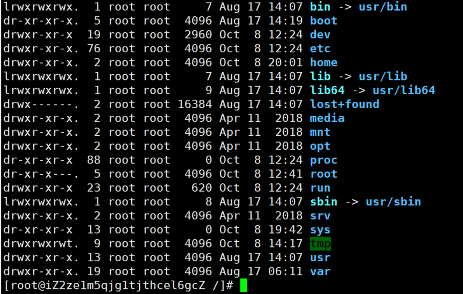
实例中，boot文件的第一个属性用”d”表示。”d”在Linux中代表该文件是一个目录文件。
在Linux中第一个字符代表这个文件是目录、文件或链接文件等等：
- ==当为[ d ]则是目录==
- ==当为[ - ]则是文件；==
- ==若是[ l ]则表示为链接文档 ( link file )；==
- 若是[ b ]则表示为装置文件里面的可供储存的接口设备 ( 可随机存取装置 )；
- 若是[ c ]则表示为装置文件里面的串行端口设备，例如键盘、鼠标 ( 一次性读取装置 )。
接下来的字符中，以三个为一组，且均为『rwx』 的三个参数的组合。
其中，[ r ]代表可读(read)、[ w ]代表可写(write)、[ x ]代表可执行(execute)。
要注意的是，这三个权限的位置不会改变，如果没有权限，就会出现减号[ - ]而已。
每个文件的属性由左边第一部分的10个字符来确定（如下图）：
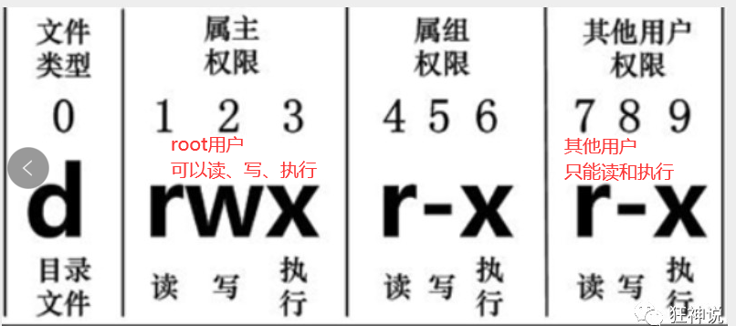
从左至右用0-9这些数字来表示。
第0位确定文件类型，第1-3位确定属主（该文件的所有者）拥有该文件的权限。第4-6位确定属组（所有者的同组用户）拥有该文件的权限，第7-9位确定其他用户拥有该文件的权限。
其中：
第1、4、7位表示读权限，如果用”r”字符表示，则有读权限，如果用”-“字符表示，则没有读权限；
第2、5、8位表示写权限，如果用”w”字符表示，则有写权限，如果用”-“字符表示没有写权限；
第3、6、9位表示可执行权限，如果用”x”字符表示，则有执行权限，如果用”-“字符表示，则没有执行权限。
对于文件来说，它都有一个特定的所有者，也就是对该文件具有所有权的用户。
同时，在Linux系统中，用户是按组分类的，一个用户属于一个或多个组。
文件所有者以外的用户又可以分为文件所有者的同组用户和其他用户。
因此，Linux系统按文件所有者、文件所有者同组用户和其他用户来规定了不同的文件访问权限。
在以上实例中，boot 文件是一个目录文件，属主和属组都为 root。第一个root位置表示属主，第二个root表示属组
修改文件属性
1、chgrp：更改文件属组
chgrp [-R] 属组名 文件名
-R：递归更改文件属组，就是在更改某个目录文件的属组时，如果加上-R的参数，那么该目录下的所有文件的属组都会更改。
3vS_j:hG/n<,
2、chown：更改文件属主，也可以同时更改文件属组
chown [–R] 属主名 文件名
chown [-R] 属主名：属组 名 文件名
==3、chmod：更改文件9个属性（必须要掌握）==
chmod [-R] xyz 文件或目录
Linux文件属性有两种设置方法，一种是数字(常用的是数字），一种是符号。
Linux文件的基本权限就有九个，分别是owner/group/others三种身份各有自己的read/write/execute权限。
先复习一下刚刚上面提到的数据：文件的权限字符为：『-rwxrwxrwx』， 这九个权限是三个三个一组的！其中，我们可以使用数字来代表各个权限，各权限的分数对照表如下：
r:4 w:2 x:1
可读可写不可执行 rw- 6
可读可写可执行 rwx 7
chmod 777 文件赋予所有用户可读可写可执行
每种身份(owner/group/others)各自的三个权限(r/w/x)分数是需要累加的，例如当权限为：[-rwxrwx—] 分数则是：
- owner = rwx = 4+2+1 = 7
- group = rwx = 4+2+1 = 7
- others= — = 0+0+0 = 0
chmod 770 filename
文件内容查看
概述
Linux系统中使用以下命令来查看文件的内容：
- ==cat 由第一行开始显示文件内容 ，==
- tac 从最后一行开始显示，可以看出 tac 是 cat 的倒着写！
- nl 显示的时候，顺道输出行号！看代码的时候希望显示行号
- more 一页一页的显示文件内容 ==空格表示翻页，enter代表向下看一行 :f可以看到当前的行号==
- less 与 more 类似，但是比 more 更好的是，他可以往前翻页！==空格下翻页，上下键代表翻动页面！q命令退出==
- head 只看头几行
- tail 只看尾巴几行
你可以使用 *man [命令]*来查看各个命令的使用文档，如 ：man cp。
网络配置目录：cd /etc/sysconfig/network-scripts
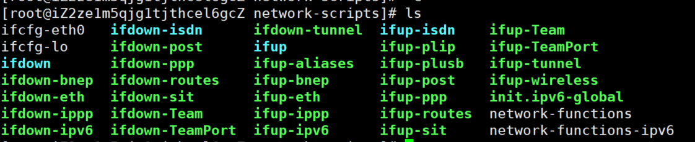
使用ifconfig来查看网络配置
cat 由第一行开始显示文件内容
语法：
cat [-AbEnTv]
选项与参数：
- -A ：相当於 -vET 的整合选项，可列出一些特殊字符而不是空白而已；
- -b ：列出行号，仅针对非空白行做行号显示，空白行不标行号！
- -E ：将结尾的断行字节 $ 显示出来；
- -n ：列印出行号，连同空白行也会有行号，与 -b 的选项不同；
- -T ：将 [tab] 按键以 ^I 显示出来；
- -v ：列出一些看不出来的特殊字符
测试：
[root@kuangshen ~]
DEVICE=eth0
BOOTPROTO=dhcp
ONBOOT=yes
tac
tac与cat命令刚好相反，文件内容从最后一行开始显示，可以看出 tac 是 cat 的倒着写！如：
[root@kuangshen ~]
ONBOOT=yes
BOOTPROTO=dhcp
DEVICE=eth0
nl 显示行号
语法：
nl [-bnw] 文件
选项与参数：
- -b ：指定行号指定的方式，主要有两种：-b a ：表示不论是否为空行，也同样列出行号(类似 cat -n)；-b t ：如果有空行，空的那一行不要列出行号(默认值)；
- -n ：列出行号表示的方法，主要有三种：-n ln ：行号在荧幕的最左方显示；-n rn ：行号在自己栏位的最右方显示，且不加 0 ；-n rz ：行号在自己栏位的最右方显示，且加 0 ；
- -w ：行号栏位的占用的位数。
测试：
[root@kuangshen ~]
1DEVICE=eth0
2BOOTPROTO=dhcp
3ONBOOT=yes
more 一页一页翻动
在 more 这个程序的运行过程中，你有几个按键可以按的：
- 空白键 (space)：代表向下翻一页；
- Enter ：代表向下翻『一行』；
- /字串 ：代表在这个显示的内容当中，向下搜寻『字串』这个关键字；
- :f ：立刻显示出档名以及目前显示的行数；
- q ：代表立刻离开 more ，不再显示该文件内容。
- b 或 [ctrl]-b ：代表往回翻页，不过这动作只对文件有用，对管线无用。
[root@kuangshen etc]
[root@iZ2ze1m5qjg1tjthcel6gcZ etc]
if ( ! ${?PATH} ) then
if ( $uid == 0 ) then
setenv PATH "/usr/local/sbin:/usr/sbin:/usr/local/bin:/usr/bin"
else
setenv PATH "/usr/local/bin:/usr/bin:/usr/local/sbin:/usr/sbin"
endif
else
foreach p ( /usr/local/sbin /usr/sbin )
switch (":${PATH}:")
case "*:${p}:*":
breaksw
default:
if ( $uid == 0 ) then
set path = ( ${p} ${path:q} )
else
--More--(47%)
less 一页一页翻动，以下实例输出/etc/man.config文件的内容：
less运行时可以输入的命令有：
- 空白键 ：向下翻动一页；
- [pagedown]：向下翻动一页；
- [pageup] ：向上翻动一页；
- /字串 ：向下搜寻『字串』的功能；
- ?字串 ：向上搜寻『字串』的功能；
- n ：重复前一个搜寻 (与 / 或 ? 有关！)
- N ：反向的重复前一个搜寻 (与 / 或 ? 有关！)
- q ：离开 less 这个程序；
[root@iZ2ze1m5qjg1tjthcel6gcZ etc]
if ( ! ${?PATH} ) then
if ( $uid == 0 ) then
setenv PATH "/usr/local/sbin:/usr/sbin:/usr/local/bin:/usr/bin"
else
setenv PATH "/usr/local/bin:/usr/bin:/usr/local/sbin:/usr/sbin"
endif
else
foreach p ( /usr/local/sbin /usr/sbin )
switch (":${PATH}:")
case "*:${p}:*":
breaksw
default:
if ( $uid == 0 ) then
set path = ( ${p} ${path:q} )
else
csh.login
head 取出文件前面几行
语法：
head [-n number] 文件
选项与参数：**-n** 后面接数字，代表显示几行的意思！
默认的情况中，显示前面 10 行！若要显示前 20 行，就得要这样：
[root@kuangshen etc]# head -n 20 /etc/csh.login
tail 取出文件后面几行
语法：
tail [-n number] 文件
选项与参数：
默认的情况中，显示最后 10 行！若要显示最后 20 行，就得要这样：
[root@kuangshen etc]
拓展：Linux 链接概念
Linux 链接分两种，一种被称为硬链接（Hard Link），另一种被称为软链接（Symbolic Link）。
情况下，ln 命令产生硬链接。
硬连接
硬连接指通过索引节点来进行连接。在 Linux 的文件系统中，保存在磁盘分区中的文件不管是什么类型都给它分配一个编号，称为索引节点号(Inode Index)。在 Linux 中，多个文件名指向同一索引节点是存在的。比如：A 是 B 的硬链接（A 和 B 都是文件名），则 A 的目录项中的 inode 节点号与 B 的目录项中的 inode 节点号相同，即一个 inode 节点对应两个不同的文件名，两个文件名指向同一个文件，A 和 B 对文件系统来说是完全平等的。删除其中任何一个都不会影响另外一个的访问。
硬连接的作用是允许一个文件拥有多个有效路径名，这样用户就可以建立硬连接到重要文件，以防止“误删”的功能。其原因如上所述，因为对应该目录的索引节点有一个以上的连接。只删除一个连接并不影响索引节点本身和其它的连接，只有当最后一个连接被删除后，文件的数据块及目录的连接才会被释放。也就是说，文件真正删除的条件是与之相关的所有硬连接文件均被删除。
软连接
另外一种连接称之为符号连接（Symbolic Link），也叫软连接。软链接文件有类似于 Windows 的快捷方式，如果删除了原文件，那么快捷方式也访问不了了。它实际上是一个特殊的文件。在符号连接中，文件实际上是一个文本文件，其中包含的有另一文件的位置信息。比如：A 是 B 的软链接（A 和 B 都是文件名），A 的目录项中的 inode 节点号与 B 的目录项中的 inode 节点号不相同，A 和 B 指向的是两个不同的 inode，继而指向两块不同的数据块。但是 A 的数据块中存放的只是 B 的路径名（可以根据这个找到 B 的目录项）。A 和 B 之间是“主从”关系，如果 B 被删除了，A 仍然存在（因为两个是不同的文件），但指向的是一个无效的链接。
测试：
- 创建连接： ln命令
- touch 创建文件
- echo 输入字符串
[root@kuangshen /]
[root@kuangshen home]
[root@kuangshen home]
f1
[root@kuangshen home]
[root@kuangshen home]
[root@kuangshen home]
397247 -rw-r--r-- 2 root root 0 Mar 13 00:50 f1
397247 -rw-r--r-- 2 root root 0 Mar 13 00:50 f2
397248 lrwxrwxrwx 1 root root 2 Mar 13 00:50 f3 -> f1
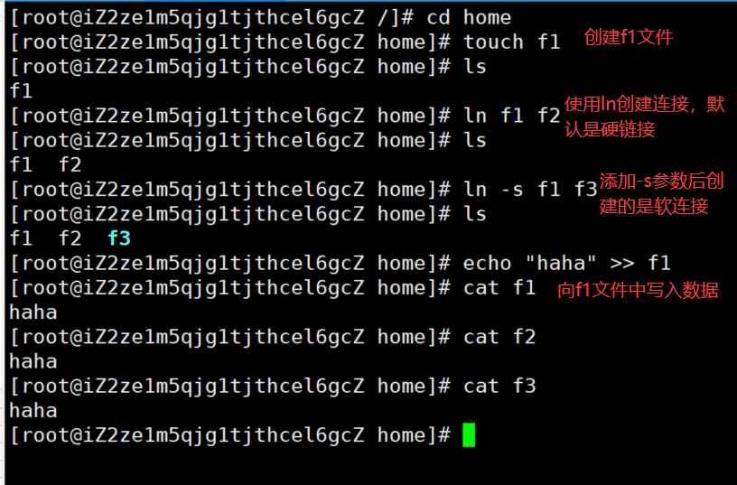
从上面的结果中可以看出，硬连接文件 f2 与原文件 f1 的 inode 节点相同，均为 397247，然而软连接文件的 inode 节点不同。
[root@kuangshen home]
[root@kuangshen home]
I am f1 file
[root@kuangshen home]
I am f1 file
[root@kuangshen home]
I am f1 file
[root@kuangshen home]
[root@kuangshen home]
I am f1 file
[root@kuangshen home]
cat: f3: No such file or directory
通过上面的测试可以看出：当删除原始文件 f1 后，硬连接 f2 不受影响，但是软连接 f1 文件无效；
依此您可以做一些相关的测试，可以得到以下全部结论：
- 删除符号连接f3,对f1,f2无影响；
- 删除硬连接f2，对f1,f3也无影响；
- 删除原文件f1，对硬连接f2没有影响，导致符号连接f3失效；
- 同时删除原文件f1,硬连接f2，整个文件会真正的被删除。
vim编译器
什么是Vim编辑器
vim通过一些插件可以实现和IDE一样的查看
Vim是从 vi 发展出来的一个文本编辑器。代码补完、编译及错误跳转等方便编程的功能特别丰富，在程序员中被广泛使用。==（查看内容，编辑内容，保存内容）==
简单的来说， vi 是老式的字处理器，不过功能已经很齐全了，但是还是有可以进步的地方。
vim 则可以说是程序开发者的一项很好用的工具。
所有的 Unix Like 系统都会内建 vi 文书编辑器，其他的文书编辑器则不一定会存在。
连 vim 的官方网站 (http://www.vim.org) 自己也说 vim 是一个程序开发工具而不是文字处理软件。
vim 键盘图：

三种使用模式
基本上 vi/vim 共分为三种模式，分别是命令模式（Command mode），输入模式（Insert mode）和底线命令模式（Last line mode）。这三种模式的作用分别是：
命令模式：
用户刚刚启动 vi/vim，便进入了命令模式。
此状态下敲击键盘动作会被Vim识别为命令，而非输入字符。比如我们此时按下i，并不会输入一个字符，i被当作了一个命令。
以下是常用的几个命令：
- i 切换到输入模式，以输入字符。
- x 删除当前光标所在处的字符。
- : 切换到底线命令模式，以在最底一行输入命令。如果是编辑模式，需要先退出编辑模式。使用ESC
若想要编辑文本：启动Vim，进入了命令模式，按下i，切换到输入模式。
命令模式只有一些最基本的命令，因此仍要依靠底线命令模式输入更多命令。
输入模式：
在命令模式下按下i就进入了输入模式。
在输入模式中，可以使用以下按键：
- 字符按键以及Shift组合，输入字符
- ENTER，回车键，换行
- BACK SPACE，退格键，删除光标前一个字符
- DEL，删除键，删除光标后一个字符
- 方向键，在文本中移动光标
- HOME/END，移动光标到行首/行尾
- Page Up/Page Down，上/下翻页
- Insert，切换光标为输入/替换模式，光标将变成竖线/下划线
- ESC，退出输入模式，切换到命令模式
底线命令模式
在命令模式下按下:（英文冒号）就进入了底线命令模式。光标移动到了最底下，就可以在这里输入一些底线命令了
底线命令模式可以输入单个或多个字符的命令，可用的命令非常多。
在底线命令模式中，基本的命令有（已经省略了冒号）：
按ESC键可随时退出底线命令模式。
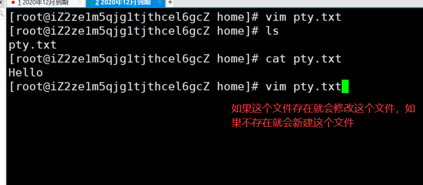
简单的说，我们可以将这三个模式想成底下的图标来表示：

完整的演示说明
- 新建或者编辑文件
vim filename
- 按i a o 进入输入模式，编写内容
- 编写完成后按ESC退出编辑模式
- 按:进入底线模式 输入
wq保存退出
Vim 按键说明
除了上面简易范例的 i, Esc, :wq 之外，其实 vim 还有非常多的按键可以使用。
第一部分：一般模式（命令模式）可用的光标移动、复制粘贴、搜索替换等
| 移动光标的方法 |
|
| h 或 向左箭头键(←) |
光标向左移动一个字符 |
| j 或 向下箭头键(↓) |
光标向下移动一个字符 |
| k 或 向上箭头键(↑) |
光标向上移动一个字符 |
| l 或 向右箭头键(→) |
光标向右移动一个字符 |
| [Ctrl] + [f] |
屏幕『向下』移动一页，相当于 [Page Down]按键 (常用) |
| [Ctrl] + [b] |
屏幕『向上』移动一页，相当于 [Page Up] 按键 (常用) |
| [Ctrl] + [d] |
屏幕『向下』移动半页 |
| [Ctrl] + [u] |
屏幕『向上』移动半页 |
| + |
光标移动到非空格符的下一行 |
| - |
光标移动到非空格符的上一行 配置文件中空格较多使用这个方便 |
| ==n< space>== |
那个 n 表示『数字』，例如 20 。按下数字后再按空格键，光标会向右移动这一行的 n 个字符。 |
| 0 或功能键[Home] |
这是数字『 0 』：移动到这一行的最前面字符处 (常用) |
| $ 或功能键[End] |
移动到这一行的最后面字符处(常用) |
| H |
光标移动到这个屏幕的最上方那一行的第一个字符 |
| M |
光标移动到这个屏幕的中央那一行的第一个字符 |
| L |
光标移动到这个屏幕的最下方那一行的第一个字符 |
| G |
移动到这个档案的最后一行(常用) |
| nG |
n 为数字。移动到这个档案的第 n 行。例如 20G 则会移动到这个档案的第 20 行(可配合 :set nu) |
| gg |
移动到这个档案的第一行，相当于 1G 啊！(常用) |
| ==n< Enter>== |
n 为数字。光标向下移动 n 行(常用) |
| 搜索替换 |
|
| ==/word== |
向光标之下寻找一个名称为 word 的字符串。例如要在档案内搜寻 vbird 这个字符串，就输入 /vbird 即可！(常用) |
| ?word |
向光标之上寻找一个字符串名称为 word 的字符串。 |
| ==n== |
这个 n 是英文按键。代表重复前一个搜寻的动作。举例来说， 如果刚刚我们执行 /vbird 去向下搜寻 vbird 这个字符串，则按下 n 后，会向下继续搜寻下一个名称为 vbird 的字符串。如果是执行 ?vbird 的话，那么按下 n 则会向上继续搜寻名称为 vbird 的字符串！ |
| ==N== |
这个 N 是英文按键。与 n 刚好相反，为『反向』进行前一个搜寻动作。例如 /vbird 后，按下 N 则表示『向上』搜寻 vbird 。 |
| 删除、复制与粘贴 |
|
| x, X |
在一行字当中，x 为向后删除一个字符 (相当于 [del] 按键)， X 为向前删除一个字符(相当于 [backspace] 亦即是退格键) (常用) |
| nx |
n 为数字，连续向后删除 n 个字符。举例来说，我要连续删除 10 个字符， 『10x』。 |
| dd |
删除游标所在的那一整行(常用) |
| ndd |
n 为数字。删除光标所在的向下 n 行，例如 20dd 则是删除 20 行 (常用) |
| d1G |
删除光标所在到第一行的所有数据 |
| dG |
删除光标所在到最后一行的所有数据 |
| d$ |
删除游标所在处，到该行的最后一个字符 |
| d0 |
那个是数字的 0 ，删除游标所在处，到该行的最前面一个字符 |
| yy |
复制游标所在的那一行(常用) |
| nyy |
n 为数字。复制光标所在的向下 n 行，例如 20yy 则是复制 20 行(常用) |
| y1G |
复制游标所在行到第一行的所有数据 |
| yG |
复制游标所在行到最后一行的所有数据 |
| y0 |
复制光标所在的那个字符到该行行首的所有数据 |
| y$ |
复制光标所在的那个字符到该行行尾的所有数据 |
| p, P |
p 为将已复制的数据在光标下一行贴上，P 则为贴在游标上一行！举例来说，我目前光标在第 20 行，且已经复制了 10 行数据。则按下 p 后， 那 10 行数据会贴在原本的 20 行之后，亦即由 21 行开始贴。但如果是按下 P 呢？那么原本的第 20 行会被推到变成 30 行。(常用) |
| J |
将光标所在行与下一行的数据结合成同一行 |
| c |
重复删除多个数据，例如向下删除 10 行，[ 10cj ] |
| ==u== |
复原前一个动作。(常用) |
| [Ctrl]+r |
重做上一个动作。(常用) |
第二部分：一般模式切换到编辑模式的可用的按钮说明
| 进入输入或取代的编辑模式 |
|
| ==i, I== |
进入输入模式(Insert mode)：i 为『从目前光标所在处输入』， I 为『在目前所在行的第一个非空格符处开始输入』。(常用) |
| a, A |
进入输入模式(Insert mode)：a 为『从目前光标所在的下一个字符处开始输入』， A 为『从光标所在行的最后一个字符处开始输入』。(常用) |
| o, O |
进入输入模式(Insert mode)：这是英文字母 o 的大小写。o 为『在目前光标所在的下一行处输入新的一行』；O 为在目前光标所在处的上一行输入新的一行！(常用) |
| r, R |
进入取代模式(Replace mode)：r 只会取代光标所在的那一个字符一次；R会一直取代光标所在的文字，直到按下 ESC 为止；(常用) |
| ==[Esc]== |
退出编辑模式，回到一般模式中(常用) |
第三部分：一般模式切换到指令行模式的可用的按钮说明
| 指令行的储存、离开等指令 |
|
| :w |
将编辑的数据写入硬盘档案中(常用) |
| :w! |
若文件属性为『只读』时，强制写入该档案。不过，到底能不能写入， 还是跟你对该档案的档案权限有关啊！ |
| :q |
离开 vi (常用) |
| :q! |
若曾修改过档案，又不想储存，使用 ! 为强制离开不储存档案。 |
| 注意一下啊，那个惊叹号 (!) 在 vi 当中，常常具有『强制』的意思～ |
|
| ==:wq== |
储存后离开，若为 :wq! 则为强制储存后离开 (常用) |
| ZZ |
这是大写的 Z 喔！若档案没有更动，则不储存离开，若档案已经被更动过，则储存后离开！ |
| :w [filename] |
将编辑的数据储存成另一个档案（类似另存新档） |
| :r [filename] |
在编辑的数据中，读入另一个档案的数据。亦即将 『filename』 这个档案内容加到游标所在行后面 |
| :n1,n2 w [filename] |
将 n1 到 n2 的内容储存成 filename 这个档案。 |
| :! command |
暂时离开 vi 到指令行模式下执行 command 的显示结果！例如 『:! ls /home』即可在 vi 当中看 /home 底下以 ls 输出的档案信息！ |
| ==:set nu== |
显示行号，设定之后，会在每一行的前缀显示该行的行号 |
| :set nonu |
与 set nu 相反，为取消行号！ |
以上标红的掌握熟练即可，其余的了解，我们平时使用VIM最多的就是修改下文件内容而已！
账号管理
一般在公司中，员工用的都不是root账户
简介
Linux系统是一个多用户多任务的分时操作系统，任何一个要使用系统资源的用户，都必须首先向系统管理员申请一个账号，然后以这个账号的身份进入系统。
用户的账号一方面可以帮助系统管理员对使用系统的用户进行跟踪，并控制他们对系统资源的访问；另一方面也可以帮助用户组织文件，并为用户提供安全性保护。
每个用户账号都拥有一个唯一的用户名和各自的口令。
用户在登录时键入正确的用户名和口令后，就能够进入系统和自己的主目录。
实现用户账号的管理，要完成的工作主要有如下几个方面：
- 用户账号的添加、删除与修改。
- 用户口令的管理。
- 用户组的管理。
用户账号的管理
用户账号的管理工作主要涉及到用户账号的添加、修改和删除。
添加用户账号就是在系统中创建一个新账号，然后为新账号分配用户号、用户组、主目录和登录Shell等资源。
添加账号 useradd
useradd 选项 用户名
参数说明：
选项 :
- -c comment 指定一段注释性描述。
- -d 目录 指定用户主目录，如果此目录不存在，则同时使用-m选项，可以创建主目录。
- -g 用户组 指定用户所属的用户组。
- -G 用户组，给用户指定组。
- -m 使用者目录如不存在则自动建立。
- -s Shell文件 指定用户的登录Shell。
- -u 用户号 指定用户的用户号，如果同时有-o选项，则可以重复使用其他用户的标识号。
用户名 :
-
[root@kuangshen home]
在Linux中一切皆文件，这里的添加用户说白了就是在/etc/password文件中写入用户的信息 ,同时更新其他系统文件如/etc/shadow,/etc/grou等。
删除帐号
如果一个用户的账号不再使用，可以从系统中删除。
删除用户账号就是要将/etc/passwd等系统文件中的该用户记录删除，必要时还删除用户的主目录。
删除一个已有的用户账号使用userdel命令，其格式如下：
userdel 选项 用户名
常用的选项是 -r，它的作用是把用户的主目录一起删除。
[root@kuangshen home]# userdel -r kuangshen
此命令删除用户kuangshen在系统文件中（主要是/etc/passwd, /etc/shadow, /etc/group等）的记录，同时删除用户的主目录。
修改用户
修改用户账号就是根据实际情况更改用户的有关属性，如用户号、主目录、用户组、登录Shell等。
修改已有用户的信息使用usermod命令，其格式如下：
usermod 选项 用户名
常用的选项包括-c, -d, -m, -g, -G, -s, -u以及-o等，这些选项的意义与useradd命令中的选项一样，可以为用户指定新的资源值。
例如：
# usermod -s /bin/ksh -d /home/z –g developer kuangshen
此命令将用户kuangshen的登录Shell修改为ksh，主目录改为/home/z，用户组改为developer。
修改完毕之后查看配置文件即可。
Linux下如何切换用户
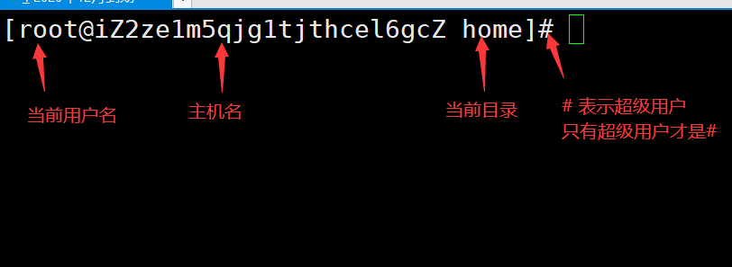
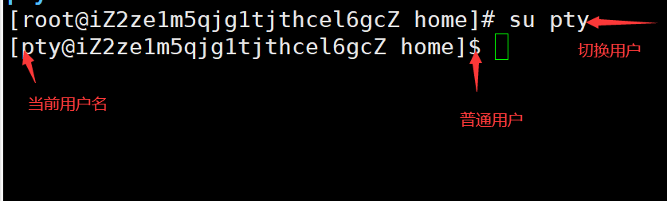
1.切换用户的命令为：su username 【username是你的用户名哦】
2.从普通用户切换到root用户，还可以使用命令：sudo su
3.在终端输入exit或logout或使用快捷方式ctrl+d，可以退回到原来用户，其实ctrl+d也是执行的exit命令
4.在切换用户时，如果想在切换用户之后使用新用户的工作环境，可以在su和username之间加-，例如：【su - root】
$表示普通用户
#表示超级用户，也就是root用户
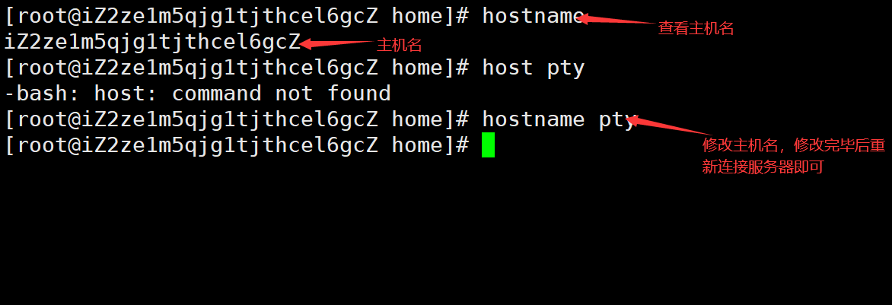
用户的密码设置
我们一般通过root创建用户的时候，需要配置密码
在Linux上输入密码是不会显示出来的，正常数据就行了，不是电脑或系统的问题
超级用户设置密码
passwd username:
new password
re password
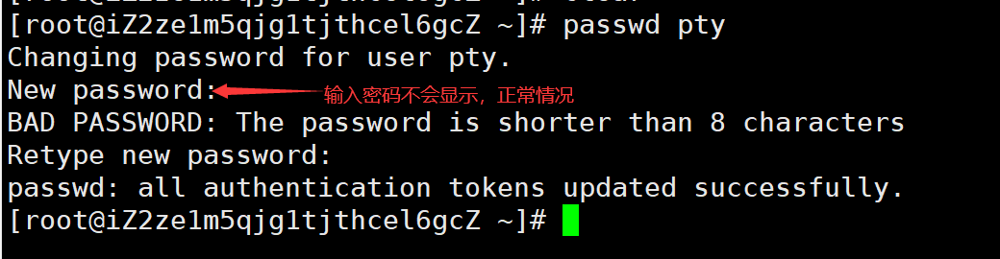
普通用户
Old password:
New password:
Re-enter new password:
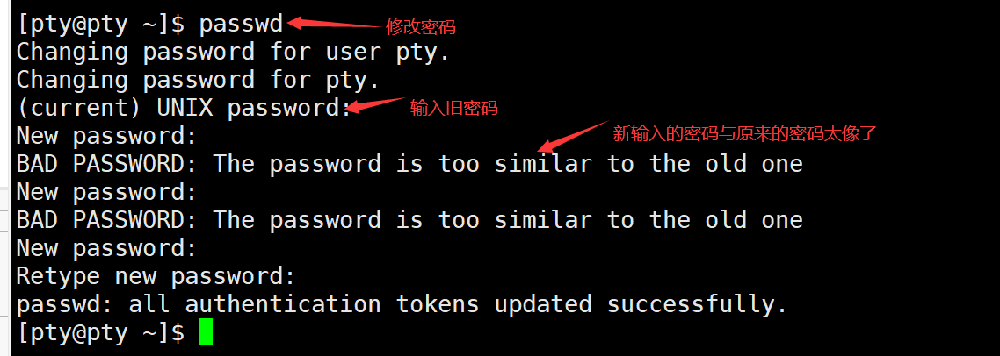
锁定账户
冻结账户之后，这个账户就不能再登录！
passwd -l pty
passwd -d pty
passwd -u pty
用户组管理
每个用户都有一个用户组，系统可以对一个用户组中的所有用户进行集中管理。不同Linux 系统对用户组的规定有所不同，如Linux下的用户属于与它同名的用户组，这个用户组在创建用户时同时创建。
用户组的管理涉及用户组的添加、删除和修改。==组的增加、删除和修改实际上就是对/etc/group文件的更新。==
增加一个新的用户组使用groupadd命令
groupadd 选项 用户组
可以使用的选项有：
- -g GID 指定新用户组的组标识号（GID）。
- -o 一般与-g选项同时使用，表示新用户组的GID可以与系统已有用户组的GID相同。
实例1：
# groupadd group1
此命令向系统中增加了一个新组group1，新组的组标识号是在当前已有的最大组标识号的基础上加1。
实例2：
# groupadd -g 101 group2
此命令向系统中增加了一个新组group2，同时指定新组的组标识号是101。
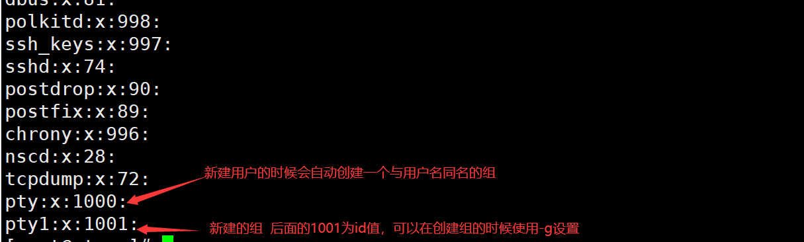
如果要删除一个已有的用户组，使用groupdel命令
groupdel 用户组
例如：
# groupdel group1
此命令从系统中删除组group1。
修改用户组的属性使用groupmod命令
groupmod 选项 用户组
常用的选项有：
- -g GID 为用户组指定新的组标识号。
- -o 与-g选项同时使用，用户组的新GID可以与系统已有用户组的GID相同。
- -n新用户组 将用户组的名字改为新名字
# 此命令将组group2的组标识号修改为102。
groupmod -g 102 group2
# 将组group2的标识号改为10000，组名修改为group3。
groupmod –g 10000 -n group3 group2
切换组
如果一个用户同时属于多个用户组，那么用户可以在用户组之间切换，以便具有其他用户组的权限。
用户可以在登录后，使用命令newgrp切换到其他用户组，这个命令的参数就是目的用户组。例如：
$ newgrp root
这条命令将当前用户切换到root用户组，前提条件是root用户组确实是该用户的主组或附加组。
/etc/passwd
完成用户管理的工作有许多种方法，但是每一种方法实际上都是对有关的系统文件进行修改。
与用户和用户组相关的信息都存放在一些系统文件中，这些文件包括/etc/passwd, /etc/shadow, /etc/group等。
下面分别介绍这些文件的内容。
/etc/passwd文件是用户管理工作涉及的最重要的一个文件。
Linux系统中的每个用户都在/etc/passwd文件中有一个对应的记录行，它记录了这个用户的一些基本属性。
这个文件对所有用户都是可读的。它的内容类似下面的例子：
＃ cat /etc/passwd
root:x:0:0:Superuser:/:
daemon:x:1:1:System daemons:/etc:
bin:x:2:2:Owner of system commands:/bin:
sys:x:3:3:Owner of system files:/usr/sys:
adm:x:4:4:System accounting:/usr/adm:
uucp:x:5:5:UUCP administrator:/usr/lib/uucp:
auth:x:7:21:Authentication administrator:/tcb/files/auth:
cron:x:9:16:Cron daemon:/usr/spool/cron:
listen:x:37:4:Network daemon:/usr/net/nls:
lp:x:71:18:Printer administrator:/usr/spool/lp:
从上面的例子我们可以看到，/etc/passwd中一行记录对应着一个用户，每行记录又被冒号(:)分隔为7个字段，其格式和具体含义如下：
用户名:口令:用户标识号:组标识号:注释性描述:主目录:登录Shell
pty:x:1000:1000::/home/pty:/bin/bash
登录口令放在/etc/shadow中
用户组的所有信息放在/etc/group中
磁盘管理
概述
Linux磁盘管理好坏直接关系到整个系统的性能问题。
Linux磁盘管理常用命令为 df、du。
- df ：列出文件系统的整体磁盘使用量
- du：检查磁盘空间使用量
df
df命令参数功能：检查文件系统的磁盘空间占用情况。可以利用该命令来获取硬盘被占用了多少空间，目前还剩下多少空间等信息。
语法：
df [-ahikHTm] [目录或文件名]
选项与参数：
- -a ：列出所有的文件系统，包括系统特有的 /proc 等文件系统；
- -k ：以 KBytes 的容量显示各文件系统；
- -m ：以 MBytes 的容量显示各文件系统；
- -h ：以人们较易阅读的 GBytes, MBytes, KBytes 等格式自行显示；
- -H ：以 M=1000K 取代 M=1024K 的进位方式；
- -T ：显示文件系统类型, 连同该 partition 的 filesystem 名称 (例如 ext3) 也列出；
- -i ：不用硬盘容量，而以 inode 的数量来显示
[root@kuangshen /]
Filesystem Size Used Avail Use% Mounted on
devtmpfs 869M 0 869M 0% /dev
tmpfs 879M 708K 878M 1% /dev/shm
tmpfs 879M 496K 878M 1% /run
tmpfs 879M 0 879M 0% /sys/fs/cgroup
/dev/vda1 40G 6.3G 32G 17% /
tmpfs 176M 0 176M 0% /run/user/0
[root@kuangshen /]
Filesystem Size Used Avail Use% Mounted on
/dev/vda1 40G 6.3G 32G 17% /
du
Linux du命令也是查看使用空间的，但是与df命令不同的是Linux du命令是对文件和目录磁盘使用的空间的查看，还是和df命令有一些区别的，这里介绍Linux du命令。
语法：
du [-ahskm] 文件或目录名称
选项与参数：
- -a ：列出所有的文件与目录容量，因为默认仅统计目录底下的文件量而已。
- -h ：以人们较易读的容量格式 (G/M) 显示；
- -s ：列出总量，而不列出每个各别的目录占用容量；
- -S ：不包括子目录下的总计，与 -s 有点差别。
- -k ：以 KBytes 列出容量显示；
- -m ：以 MBytes 列出容量显示；
[root@kuangshen home]
16./redis
8./www/.oracle_jre_usage
24./www
48.
[root@kuangshen home]
4./redis/.bash_profile
4./redis/.bash_logout
....中间省略....
4./kuangstudy.txt
48.
[root@kuangshen home]
0/bin
146/boot
.....中间省略....
0/proc
.....中间省略....
1/tmp
3026/usr
513/var
2666/www
通配符 * 来代表每个目录。
与 df 不一样的是，du 这个命令其实会直接到文件系统内去搜寻所有的文件数据。
进程管理
对于我们开发人员来说，其实Linux更多偏向于使用即可
什么是进程
- 在Linux中，每一个程序都是由自己的一个进程，每一个进程都有自己的id号
- 每一个进程都有一个父进程
- 进程可以有两种存在方式：前台！后台运行！
- 一般的话服务都是后台运行的，基本的程序都是前台运行的！
命令
ps查看当前系统中正在执行的各种进程的信息！
ps-xx:
- -a 显示当前终端运行的所有进程的信息
- -u 以用户的信息显示进程
- -x 显示后台运行进程的参数
ps -aux|
对我我们来说，这里目前只需要记住一个命令即可 ps-xxx|grep 进程名 查找该进程名的全部信息
ps -ef:可以查看到父进程的信息
ps -ef|grep mysql
pstree -pu
-p 显示父id
-u 显示用户组
结束进程：杀掉进程，等价于window结束任务
kill-9 进程的id 表示强制结束进程
一般不需要结束进程，但有时候java程序进入死循环可以使用这个杀死程序
环境安装
安装软件一般有三种方式：rpm、解压缩、yum在线安装！
jdk安装
- 下载jdk rpm。去Oracle官网下载
- 使用ftp工具将文件上传到服务器
- 安装java环境
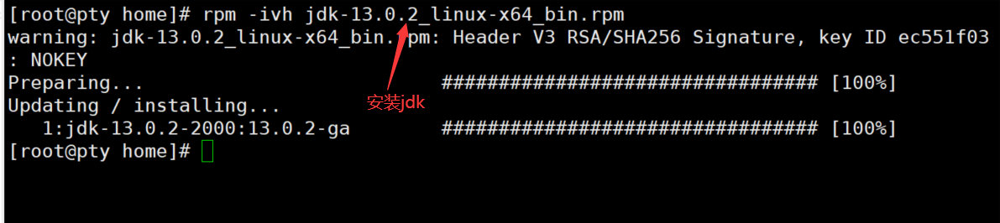
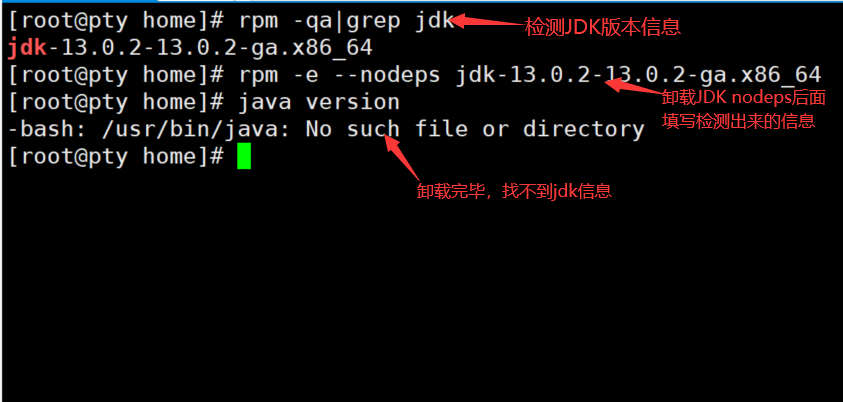
systemctl status firewalld
service firewalld start
service firewalld restart
service firewalld stop
firewall-cmd --list-all
firewall-cmd --list-ports
开端口命令：firewall-cmd --zone=public --add-port=80/tcp --permanent
重启防火墙：systemctl restart firewalld.service
命令含义：
--zone
--add-port=80/tcp
--permanent
Tomcat安装
在官网下载tomcat文件
解压这个文件
tar -zxvf apache-tomcat-9.0.22.tar.gz
启动tomcat程序 ./xxx.sh脚本即可运行
Docker(yum安装）
我们现在是在Linux下执行，一定要联网，yum是在线安装！
安装
- 安装我们的准备环境（安装gcc)
yum -y install 包名
yum -y install gcc
yum -y install gcc-c++
- 卸载docker旧版本
yum remove docker \
docker-client \
docker-client-latest \
docker-common \
docker-latest \
docker-latest-logrotate \
docker-logrotate \
docker-engine
- 安装需要的软件包
yum install -y yum-utils device-mapper-persistent-data lvm2
- 设置stable镜像仓库
yum-config-manager --add-repo http://mirrors.aliyun.com/docker-ce/linux/centos/docker-ce.repo
- 更新yum软件包索引
yum makecache fast
- 安装Docker CE
yum -y install docker-ce docker-ce-cli containerd.io
- 启动docker
systemctl start docker
- 测试
docker version
docker run hello-world
docker images